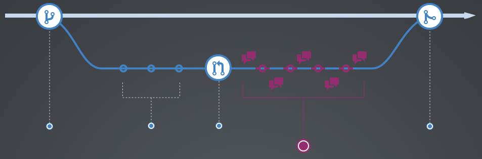

What is a GitHub flow?
A lightweight, branch-based workflow that supports teams and projects where deployments are made regularly.
Its simplicity gives it a number of advantages. But its main advantage is it's easy for people to understand, which means they can pick it up quickly and they rarely if ever mess it up
I bet you are like

Create a branch

Why?
When you create a branch in your project, you're creating an environment where you can try out new ideas.
Changes you make on a branch don't affect the master branch, so you're free to experiment and commit changes, safe in the knowledge that your branch won't be merged until it's ready to be reviewed by someone you're collaborating with.
Discuss and review your code
Code Discussion Time!!

Let the conversation flow
Once a pull request has been open, time to get social and help out.
Our awesome peers will review your changes and may have questions or comments about your "AWESOME CODE"
Maybe they want to give us some tips on coding style (Do we have those?.. Yes we do refer to wiki) that we neglected
Perhaps your changes are missing unit tests (TESTING IS IMPORTANT), or maybe everything looks great and props are in order. (high fives all around)
Merge and deploy

Your code is ready to be release to the wild
Almost done
Once your Pull Request has been reviewed and the branch passes your tests, it's time to merge your code to the master branch for deployment.
You may want to test this merge locally first before meging in the Github repo.
Finally, your work is done and merged into the master branch. This means that any new work or deployment will be based off of your merged branch to MASTER, and everyone will be using the latest code